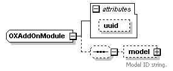
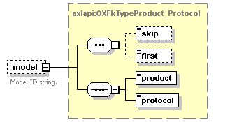

| diagram |  | ||||||||||||
| namespace | http://www.cisco.com/AXL/API/10.5 | ||||||||||||
| children | model | ||||||||||||
| used by |
|
||||||||||||
| attributes |
|
||||||||||||
| source | <xsd:complexType name="OXAddOnModule"> <xsd:sequence minOccurs="0"> <xsd:element name="model" type="axlapi:OXFkTypeProduct_Protocol" minOccurs="0" maxOccurs="1"> <xsd:annotation> <xsd:documentation>Model ID string.</xsd:documentation> </xsd:annotation> </xsd:element> </xsd:sequence> <xsd:attribute name="uuid" type="axlapi:XUUID"/> </xsd:complexType> |
| type | axlapi:XUUID | ||||||
| facets |
|
||||||
| source | <xsd:attribute name="uuid" type="axlapi:XUUID"/> |
| diagram |  | ||||||
| type | axlapi:OXFkTypeProduct_Protocol | ||||||
| properties |
|
||||||
| children | skip first product protocol | ||||||
| annotation |
|
||||||
| source | <xsd:element name="model" type="axlapi:OXFkTypeProduct_Protocol" minOccurs="0" maxOccurs="1"> <xsd:annotation> <xsd:documentation>Model ID string.</xsd:documentation> </xsd:annotation> </xsd:element> |